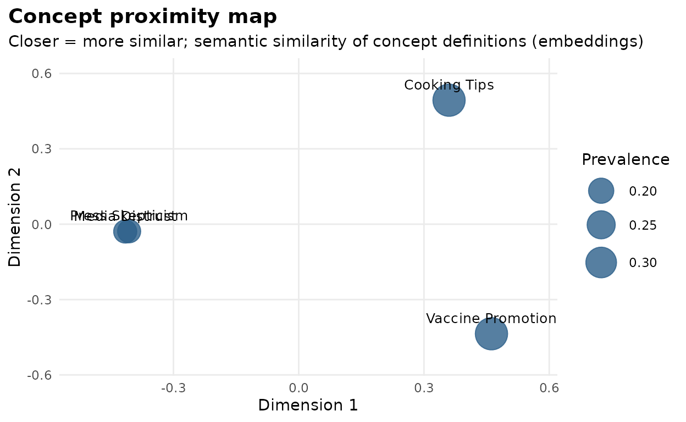
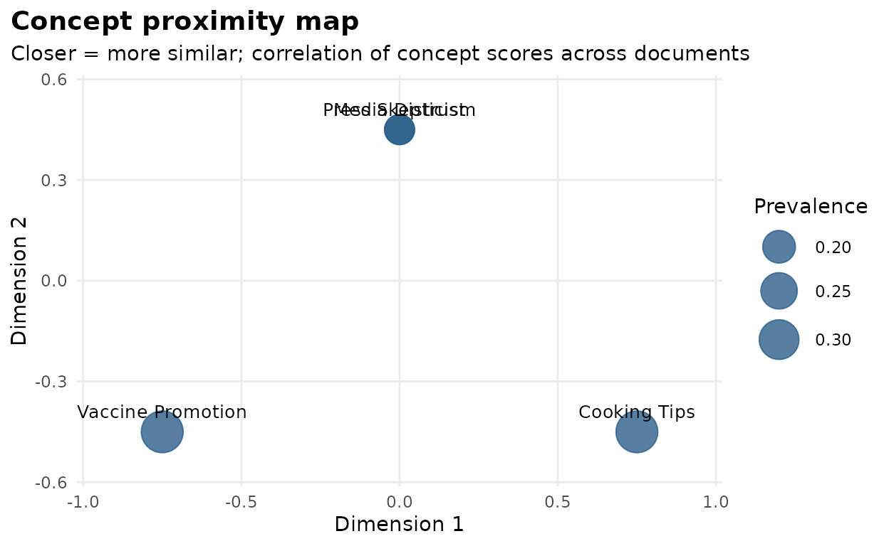
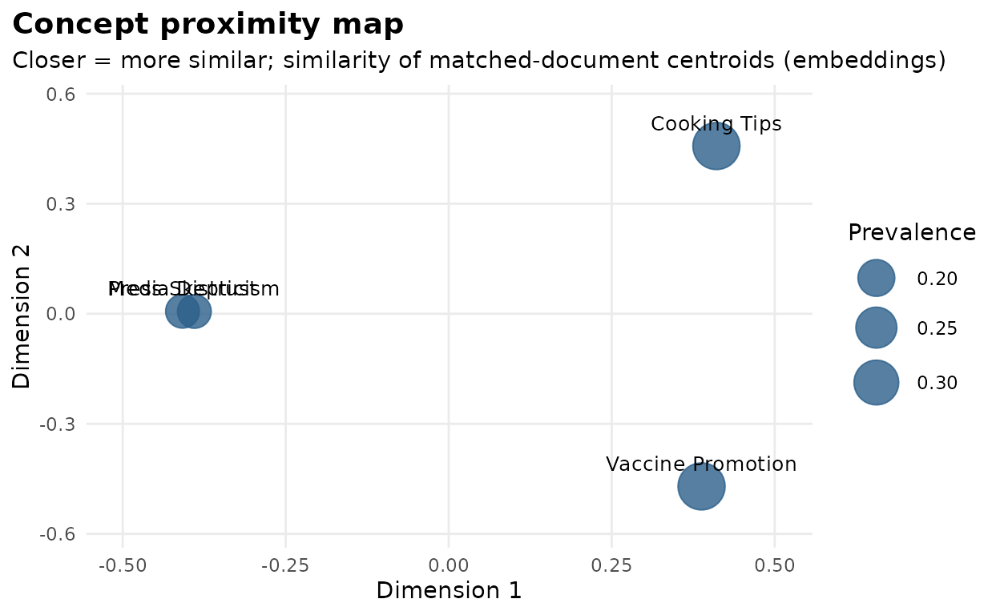

After a LLooM analysis you hold a set of concepts. A natural next question is structural: how do the concepts relate to each other? Are two of them near-synonyms? Do they describe the same documents? Do their matches come from the same corner of the corpus?
lloomr answers with three complementary similarity measures, all
available through concept_similarity() and visualized with
lloom_concept_map():
| Method | Question it answers | Inputs needed |
|---|---|---|
"embedding" |
Do the concept definitions mean similar things? | concepts only |
"scores" |
Do the concepts fire on the same documents? | scores |
"centroids" |
Do the concepts’ matches occupy the same semantic territory? | scores + document embeddings |
The three can disagree — and as this vignette shows, the disagreements are where the insight is.
A worked example with transparent embeddings
In real use, embeddings come from an API (ll_embed())
and scores from lloom_score(). So that this vignette is
self-contained, reproducible, and inspectable, we instead use a
toy embedder: it maps any text to three interpretable
dimensions — politics, health, food — by counting keywords. Everything
downstream works identically with real embeddings.
toy_embed <- function(texts) {
dims <- list(
politics = c("media", "press", "news", "journalist", "narrative"),
health = c("vaccine", "booster", "doctor", "health"),
food = c("bread", "recipe", "bake", "grill", "tomato")
)
emb <- sapply(dims, function(words) {
sapply(texts, function(t) {
sum(vapply(words, function(w) grepl(w, tolower(t)), logical(1)))
})
})
emb <- matrix(emb, nrow = length(texts),
dimnames = list(NULL, names(dims)))
emb + 0.05 # avoid all-zero rows
}
toy_embed(c("The press buried the news story.",
"Get your vaccine and booster.",
"A foolproof bread recipe."))
#> politics health food
#> [1,] 2.05 0.05 0.05
#> [2,] 0.05 2.05 0.05
#> [3,] 0.05 0.05 2.05A small corpus with three semantic territories — and a deliberate twist in how concepts will match it:
docs <- data.frame(
doc_id = as.character(1:12),
text = c(
"The media keeps pushing one narrative.", # media (1-4)
"I do not trust the news anymore.",
"Every press outlet runs identical stories.",
"Journalists no longer question the powerful.",
"Vaccines are safe and effective.", # health (5-8)
"Get your booster, protect your family.",
"My doctor recommended the new vaccine.",
"Public health depends on vaccination.",
"This bread recipe never fails.", # food (9-12)
"Grill the tomatoes with a little oil.",
"Bake at high heat for a crisp crust.",
"The secret to great bread is patience."
)
)Four concepts. The twist: “Media Distrust” and “Press Skepticism” are near-synonyms, but we will score them so that they match disjoint documents (1–2 vs. 3–4). This happens in real analyses when review fails to merge near-duplicates, or when two narrow criteria split one underlying theme:
concepts <- new_concepts(
name = c("Media Distrust", "Press Skepticism",
"Vaccine Promotion", "Cooking Tips"),
prompt = c(
"Does the text express distrust toward news media?",
"Is the text skeptical of the press and journalists?",
"Does the text promote vaccines or boosters for health?",
"Does the text share a recipe or food preparation advice?"
),
active = TRUE
)
# Scores as lloom_score() would produce them (1 = strongly agree):
match_sets <- list(c("1", "2"), c("3", "4"), c("5", "6", "7", "8"),
c("9", "10", "11", "12"))
score_df <- do.call(rbind, lapply(seq_len(nrow(concepts)), function(i) {
data.frame(
doc_id = docs$doc_id,
text = docs$text,
concept_id = concepts$id[i],
concept_name = concepts$name[i],
concept_prompt = concepts$prompt[i],
score = as.numeric(docs$doc_id %in% match_sets[[i]]),
rationale = "", highlight = "", concept_seed = NA_character_
)
}))
# Assemble a session around these pieces (in real use: lloom_gen() +
# lloom_score() fill these fields)
sess <- lloom_session(docs, "text", "doc_id",
distill_chat = "unused", synth_chat = "unused",
score_chat = "unused", embed_fn = toy_embed)
sess$concepts <- concepts
sess$score_df <- score_dfView 1: semantic similarity of the definitions
method = "embedding" embeds each concept’s
"name: prompt" text and compares them. The two media
concepts are near-identical here — their definitions say almost
the same thing:
sim_sem <- concept_similarity(concepts, method = "embedding",
embed_fn = toy_embed)
round(sim_sem, 2)
#> Media Distrust Press Skepticism Vaccine Promotion
#> Media Distrust 1.00 1.00 0.03
#> Press Skepticism 1.00 1.00 0.04
#> Vaccine Promotion 0.03 0.04 1.00
#> Cooking Tips 0.06 0.07 0.06
#> Cooking Tips
#> Media Distrust 0.06
#> Press Skepticism 0.07
#> Vaccine Promotion 0.06
#> Cooking Tips 1.00
lloom_concept_map(sess, method = "embedding")
View 2: empirical co-matching
method = "scores" correlates the concepts’ score vectors
across documents — no embeddings involved, and no additional API cost.
Now the same two media concepts look negatively
related: whenever one matches a document, the other does not.
sim_scores <- concept_similarity(concepts, method = "scores",
score_df = score_df, id_col = "doc_id")
round(sim_scores, 2)
#> Media Distrust Press Skepticism Vaccine Promotion
#> Media Distrust 1.00 -0.20 -0.32
#> Press Skepticism -0.20 1.00 -0.32
#> Vaccine Promotion -0.32 -0.32 1.00
#> Cooking Tips -0.32 -0.32 -0.50
#> Cooking Tips
#> Media Distrust -0.32
#> Press Skepticism -0.32
#> Vaccine Promotion -0.50
#> Cooking Tips 1.00
lloom_concept_map(sess, method = "scores")
If you stopped here, you might conclude the two media concepts measure different things. The third view resolves the contradiction.
View 3: corpus-grounded centroids
method = "centroids" represents each concept by the
centroid (mean embedding) of the documents it matched,
then compares centroids. The two media concepts match disjoint documents
— but those documents live in the same semantic territory, so their
centroids nearly coincide:
sim_cen <- concept_similarity(concepts, method = "centroids",
score_df = score_df, id_col = "doc_id",
embed_fn = toy_embed)
round(sim_cen, 2)
#> Media Distrust Press Skepticism Vaccine Promotion
#> Media Distrust 1.00 1.00 0.07
#> Press Skepticism 1.00 1.00 0.09
#> Vaccine Promotion 0.07 0.09 1.00
#> Cooking Tips 0.07 0.08 0.07
#> Cooking Tips
#> Media Distrust 0.07
#> Press Skepticism 0.08
#> Vaccine Promotion 0.07
#> Cooking Tips 1.00
lloom_concept_map(sess, method = "centroids")
Reading the triangle
Put the three pairwise values for “Media Distrust” vs. “Press Skepticism” side by side:
pair <- c("Media Distrust", "Press Skepticism")
data.frame(
method = c("embedding (definitions)", "scores (co-matching)",
"centroids (matched documents)"),
similarity = c(sim_sem[pair[1], pair[2]],
sim_scores[pair[1], pair[2]],
sim_cen[pair[1], pair[2]])
)
#> method similarity
#> 1 embedding (definitions) 0.999936
#> 2 scores (co-matching) -0.200000
#> 3 centroids (matched documents) 0.999766Identical definitions, anti-correlated matches, coinciding territories: these two concepts split one theme between them — strong evidence they should be merged (or that their prompts need sharpening so they draw a real distinction). The general interpretation grid:
| Definitions | Co-matching | Centroids | Reading |
|---|---|---|---|
| similar | similar | similar | redundant concepts — merge them |
| similar | dissimilar | similar | one theme split in two (this example) |
| similar | dissimilar | dissimilar | similar wording, genuinely different phenomena — the criteria are doing real work |
| dissimilar | similar | — | distinct themes that co-occur in this corpus — a substantive finding |
| dissimilar | dissimilar | dissimilar | independent concepts — the ideal for a final concept set |
Using this in a real analysis
With a scored session, each view is one call (the
"embedding" and "centroids" methods will use
the session’s embedding function — by default, the OpenAI API):
lloom_concept_map(sess) # semantic
lloom_concept_map(sess, method = "scores") # empirical (free)
lloom_concept_map(sess, method = "centroids") # corpus-grounded
# The matrices themselves:
active <- sess$concepts[sess$concepts$active, ]
concept_similarity(active, method = "scores",
score_df = lloom_results(sess), id_col = "doc_id")Two practical notes:
- Cache document embeddings if you’ll compute centroid similarity more than once — embed once, pass the matrix in:
score_df <- lloom_results(sess)
doc_texts <- score_df[!duplicated(score_df$doc_id), ]
doc_emb <- ll_embed(doc_texts$text)
rownames(doc_emb) <- doc_texts$doc_id
concept_similarity(active, method = "centroids",
score_df = score_df, id_col = "doc_id",
doc_embeddings = doc_emb)-
Thresholds and edge cases.
"centroids"counts a document as a match atscore >= threshold(default 1); concepts with no matches are dropped with a warning — lower the threshold to restore them.lloom_concept_map()needs at least three active concepts, and the plot returns its similarity matrix asattr(p, "similarity")for further analysis.